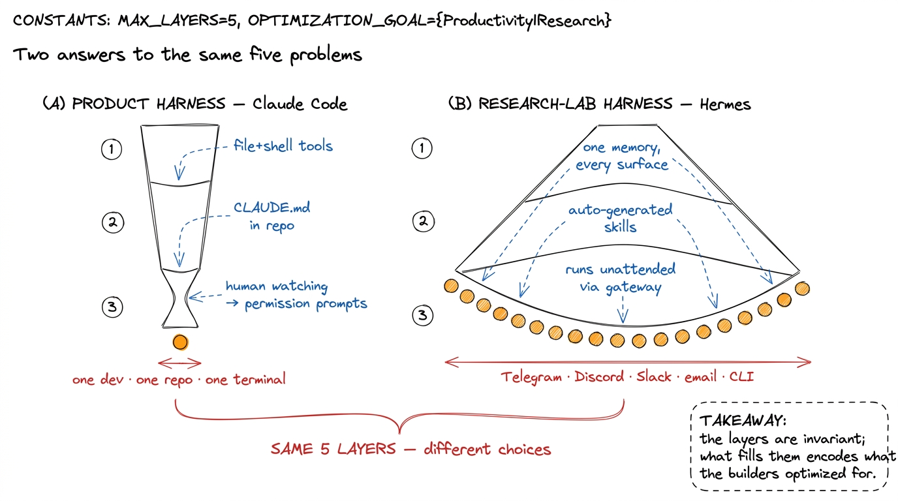
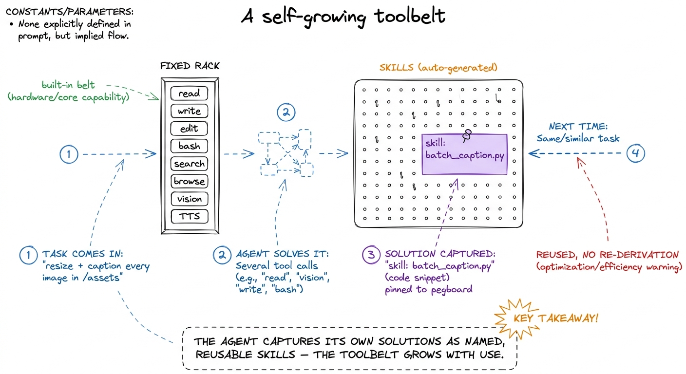
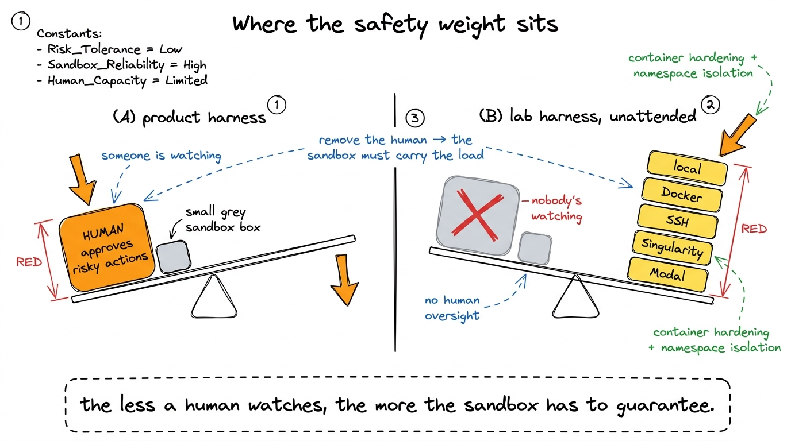
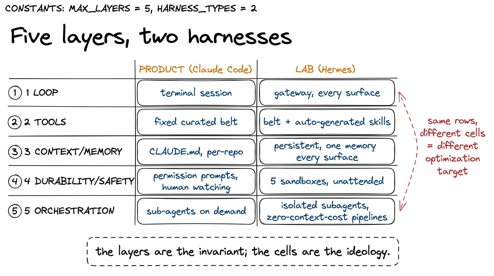

Hermes internals: a research lab's harness HERMES
By now you have built all five layers yourself, and you have read how Claude Code assembles them into a polished product. So here is a useful exercise before we close the book: take a harness built by a different kind of team, for a different kind of goal, and hold it up against your own. Nous Research's Hermes is a good foil precisely because it solves the same five problems — loop, tools, context, durability, orchestration — and gets to visibly different answers on nearly every one. Where Claude Code is a product optimized for one developer in one repo, Hermes is a research lab's agent optimized for reach, openness, and self-extension. Studying the divergence teaches you something no single harness can: that the five layers are invariant, but the choices inside them are wide open, and each choice encodes what its builders were optimizing for.
Let me set up the contrast, then walk the five layers one at a time.
What a research lab optimizes for
Claude Code, Cursor, and pi are products. A product harness optimizes for a specific user in a specific context — a developer, at a terminal or in an IDE, working in a git repo — and everything narrows toward that: the tools are file-and-shell tools, the memory is a CLAUDE.md in the project root, the permission model assumes a human is watching. Narrowing is a feature. It lets the harness be excellent at one shape of work.
A research lab has a different objective function. Nous Research builds and open-weights the Hermes family of models, and their agent exists partly to showcase and exercise those models in the messiest possible real-world conditions — across chat platforms, across machines, running unattended.1 This is a recurring pattern: lab harnesses double as evaluation surfaces for the lab's own models. The agent is both a product and a rig for finding out what the model can actually do when you stop babysitting it. That dual purpose pulls the design toward generality and autonomy, away from the tight product focus. So Hermes optimizes for generality (any surface, any task, not just code), openness (MIT-licensed, self-hostable, model-agnostic), and self-extension (the agent should get better at your work over time without you rewriting its prompt). Those three pressures reshape every layer.

figure rendering · Same five layers, opposite pressures: a product harness narrows towardKeep that map in mind. Now the layers.
Layer 1 — the loop: the same heart, a different front door
Open Hermes up at the core and you find the loop you built on Day 1. Call the model; if it asked for a tool, run the tool; append the result; repeat until it stops asking. That primitive is genuinely universal — it does not change because you changed labs. Hermes runs the same agent loop from first principles that Claude Code and pi run, because there is only one shape that turns a stateless model into an actor.
What changes is what sits in front of the loop. Claude Code's front door is a terminal session: one user, one process, one input stream. Hermes' front door is a gateway that fans many surfaces into the same loop — a message arriving from Telegram, Discord, Slack, WhatsApp, Signal, email, or the CLI all become the same user turn feeding the same machinery. Their tagline for this is "one agent, one memory, every surface," and architecturally it means the loop is decoupled from the transport. The model does not know or care whether a request arrived as a Slack DM or a shell prompt; the gateway normalizes all of them into the message array before the loop ever sees them.2 This is the same decoupling instinct you applied when you hid the provider behind a model client — push the messy, changeable detail (there, the API; here, the chat platform) behind a clean boundary so the loop stays pure. The gateway is just that boundary pointed at the input side instead of the model side.
That one design choice — transport behind a gateway — is what lets a single running agent be reachable from your phone, your team chat, and your terminal at once, sharing state across all of them. A product coding agent deliberately does not want that; it wants to be your terminal and nothing else.
Layer 2 — tools: from a fixed toolbelt to a self-growing one
Your bare harness had two tools, read_file and run_bash. Claude Code has a curated, fixed set — read, write, edit, bash, search, a few more — each with a hand-tuned schema, all decided by the people who ship the product. The set is fixed on purpose: a small, well-understood toolbelt is easier to make safe and predictable.
Hermes keeps a rich built-in belt — web search, browser automation, vision, image generation, text-to-speech, alongside the usual terminal and file tools — reflecting the "any task, not just code" mandate. But the interesting divergence is that the toolbelt is not fixed. Hermes auto-generates skills: when it works out how to accomplish something, it can capture that solution as a reusable skill and reach for it next time, so, in their words, it "never forgets how it solved a problem." A skill here is closer to a saved procedure — a named, reusable capability the agent wrote for itself — than to a hand-authored tool.3 Compare this to Claude Code's skills and slash-commands, which a human authors and drops into a folder. Same concept — a named, reusable capability — but the authorship inverts: in the product, you teach the agent; in the lab harness, the agent teaches itself and asks you to keep or discard the lesson. Self-authored capability is powerful and also the scariest thing to make safe, which is why the sandbox story below matters so much.

figure rendering · Hermes' toolbelt is not fixed: solved problems get captured as auto-geThe payoff is compounding competence: an agent that has been living in your projects for a month knows more procedures than one that started this morning. The cost is exactly the safety and predictability that a fixed toolbelt gives away — self-written skills are code you did not review, which is why the boundary between Layers 2 and 4 (guardrails and durability) carries far more weight in Hermes than in a product harness.
Layer 3 — context and memory: "one memory, every surface"
Here the two philosophies diverge most sharply. Claude Code's memory is deliberately scoped and local: a CLAUDE.md file that lives in the repo, versioned with your code, read at the start of a session, and thrown away when the session ends. The context window is managed per-session with compaction, and the whole design assumes memory belongs to a project.
Hermes assumes memory belongs to you. Its persistent memory spans surfaces and sessions — the same tagline, "one agent, one memory, every surface," is a context-engineering claim as much as a transport one. Ask it something in Slack and it can draw on what you told it last week in the CLI. It "learns your projects" and carries that forward indefinitely. This is a long-lived, cross-session, cross-surface memory store, not a per-session file, and it is a strictly harder engineering problem: the context window is still the same scarce, fixed budget you have wrestled with all book, so a growing lifetime of memory means retrieval and summarization can never be optional the way they can be in a short session.4 This is where a lab harness inherits the full weight of context engineering. A product coding agent can often get away with "read the CLAUDE.md, dump the file tree, go" because a coding session is bounded. A persistent, cross-surface memory has no natural boundary, so it forces real retrieval — deciding, every turn, which slivers of a months-long history are worth spending the context budget on. The hard part was never storing the memory; it was choosing what to recall.
The trade is legibility for continuity. CLAUDE.md is a plain file you can read, edit, and diff — you always know exactly what the agent remembers. A persistent learned memory is more capable and less inspectable; you gain an agent that never makes you repeat yourself and lose the ability to see your whole memory at a glance.
Layer 4 — durability and safety: five sandboxes instead of one gate
A product coding agent leans on the human. Because a developer is watching, Claude Code can gate risky actions behind permission prompts and let approval carry much of the safety load. That works beautifully when someone is there to say yes.
Hermes cannot assume anyone is watching — its whole point is running unattended across surfaces and on schedules. When there is no human in the loop to approve a bash call, the sandbox has to carry the safety weight the human would have carried. So where your bare harness had no sandbox at all and Claude Code has one, Hermes ships five execution backends — local, Docker, SSH, Singularity, and Modal — with "container hardening and namespace isolation." The plurality is the tell: a research tool has to run in a lab's messy reality, on a laptop, inside a Docker container, on a remote box over SSH, on an HPC cluster (that is what Singularity is for), or burst onto serverless cloud (Modal). Each backend is a different answer to the same blast-radius question — if this agent runs a bad command with no one watching, what can it reach?

figure rendering · When you remove the human from the loop, the safety weight shifts fromThere is a clean principle here worth carrying away: the amount of sandboxing a harness needs is inversely proportional to how much a human is watching. A product agent with a developer at the keyboard can afford a lighter sandbox and a permission prompt. An autonomous agent firing scheduled jobs at 3 a.m. must assume no approval will ever come, and push the entire blast radius into isolation. Same layer, opposite emphasis, both correct for their context.
Layer 5 — orchestration: isolated subagents as zero-context-cost workers
Both harnesses reach for sub-agents when a job is too big for one context, and both use the same core move you built in Layer 5: spawn a fresh agent with its own clean context, let it work, and return only the result to the parent, so the parent's precious context is spent on the answer rather than the derivation.
Hermes describes its version vividly: "isolated subagents with their own conversations, terminals, and Python RPC scripts for zero-context-cost pipelines." Unpack that phrase, because it is the whole orchestration philosophy in one line. Isolated — each subagent gets its own conversation and its own terminal, a genuinely separate world, not a shared scratchpad. Python RPC scripts — the subagent can be driven programmatically, a pipeline stage you call like a function rather than a chat you babysit. And zero-context-cost — this is the payoff and the design goal. A subagent might read ten thousand lines, run twenty commands, and think for a hundred turns; if all the parent ever sees is the final structured result, that entire subordinate computation cost the parent's context nothing.5 This is the sharpest expression of the idea we called the context budget: the most valuable thing an orchestrator can do is not see most of the work. A subagent is a way to spend a fresh, full context window on a subproblem and pay the parent back in a single compressed line. "Zero-context-cost" is a research lab naming, out loud, the exact trick that makes long autonomous runs possible at all.
Pair that with the gateway scheduling from Layer 1 — natural-language scheduling for "reports, backups, and briefings, running unattended" — and you see the research-lab shape fully assembled: an agent that receives a standing instruction once, wakes itself on a schedule with no human present, fans work out to isolated subagents that each burn their own context and report back cheaply, and writes what it learned into a persistent memory that will be there next time on whatever surface you happen to reach for. That is a genuinely different animal from a coding agent, built from the exact same five layers.
What the contrast teaches
Set the two side by side one last time and the lesson is not that either is better — it is that the five layers are structural and the choices inside them are ideological. A product harness and a lab harness face the identical problems: turn a stateless model into an actor (the loop), give it safe hands (tools and guardrails), decide what it sees each turn (context and memory), keep it alive when things go wrong and no one is watching (durability), and split work too big for one mind (orchestration). Every harness worth the name answers all five. But how it answers each one is a direct readout of what its builders were optimizing for — a narrow, legible, human-supervised product versus a general, self-extending, autonomous research tool.
That is the real reward of having built your own. You can now open any harness — Claude Code, Cursor, pi, Hermes, or one that ships next year — and read it fluently: locate its loop, name its tools, find where its memory lives, ask who carries the safety weight, and see how it splits big jobs. You will not see magic. You will see five layers, and a set of choices, and behind those choices a team's answer to the question this whole book has been about — what is this harness for?

figure rendering · The whole contrast on one grid: identical layers down the side, opposiThis is the last case study. Next, in the capstone, you put your own five choices on the table and build the harness that is yours — the one whose cells encode what you are optimizing for.